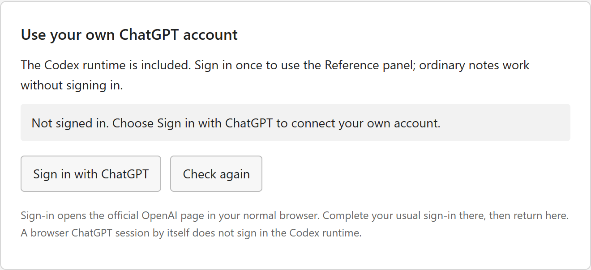
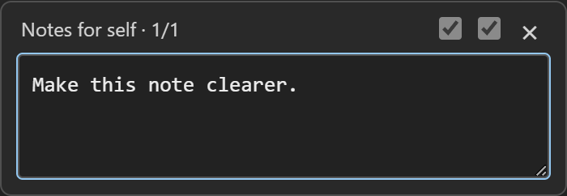

Notes Workspace · Windows · 5.3.3
Set up your own notepad and AI
Write ordinary notes, open a full Codex sidebar, or use the small Notes for self box. Every person signs in with their own account.
No separate Python, Node, development environment or API key is needed.
1. Install the Windows app
- Open the latest Windows release and download the 5.3.3 Windows ZIP.
- Right-click the ZIP and choose Extract All. Extract the entire package; keep its program files and
resourcesfolder together. - Open the extracted Notes Workspace folder and double-click
Install.cmd. - Open the new blue notepad desktop shortcut. You can start writing notes immediately.
Do not launch the app from inside the ZIP or copy only the EXE. Its supporting files must stay beside it.
2. Connect your own account
- Press Alt+W to open the full Reference sidebar.
- Choose Options → Account → Sign in with ChatGPT.
- Complete the official sign-in in your normal browser using your own account, then return to Notes Workspace.
- Choose Options → Reconnect. Select an available model and thinking level, then send a short test question.

A ChatGPT website login by itself does not sign in the app's Codex runtime. An existing Codex sign-in for your Windows user may already be available. The app uses your own account's available Codex access, models and usage limits.
For project commands, open the Account page's Windows project tools section. If prompted, choose Set up Windows sandbox and complete the official Windows administrator prompt.
3. Use Notes for self
Press Alt+S to open the small box. Type a request and press Enter to send and close it. Shift+Enter adds a new line.

| Checkbox | What it enables |
|---|---|
| First · left | Let the next compact request read and edit this note's real file. This is separate from Edit this note in the full sidebar. |
| Second · right | Automatically show a completed, permitted note revision while quiet mode is unlocked. The first box must be on to enable this control. |
Choose the boxes before sending. They cannot add permissions to a request already running. Turning off editing does not cancel file changes already accepted; the automatic preference is retained but gives new requests no note access while the first box is off.
- Both off: get a normal reply. When the green dot appears, Alt+I appends that completed reply to the note once.
- First box only: Codex can edit the real note file in the background. The displayed note stays unchanged until Alt+I applies its completed revision once. Ctrl+Z undoes it.
- Both on: a completed note revision appears automatically while quiet mode is unlocked. A brief green pulse means done, including a task that made no note changes. No partial edits or completion message are inserted.
The tiny status dot sits in the bottom bar beside Plain text: grey means working, green means ready or done, and amber means attention is needed. Open Alt+W to inspect a conflict, error or approval request. The app does not automatically accept command or additional-access approvals.
4. Hide and restore
Press Alt+Q to hide every AI control and the status dot, and freeze the displayed note. Accepted work can continue changing the note file or project files on disk.
A hidden automatic revision waits until you restore quiet mode with Alt+S. It then applies only if the note, file and revision still match. With automatic mode off, restore and press Alt+I when ready. Your manual changes and newer disk edits are preserved for review instead of being overwritten.
Hiding does not cancel work. Closing the whole program can interrupt it. Shortcuts need the app to have focus, and native file dialogs can take priority. If you set a restore passphrase, reopening either AI mode asks for it.
5. Work with notes and projects
- Use File → Open, Save and Save as for ordinary text files.
- Click + for a new note with its own separate chat. The two compact checkboxes start off again.
- Press Alt+W and choose Browse to select a project folder. Codex can edit, move and implement its real files directly under its normal permissions. Project-file changes do not wait for Alt+I.
- Attach supported documents or images in the full sidebar, or drag them onto it. Your text and AI replies have different colours and role labels there.
Shortcut reference
| Shortcut | Action |
|---|---|
| Alt+S | Open or close Notes for self. |
| Alt+W | Open the full Reference sidebar. |
| Alt+M | Select the next model in either unlocked AI view. The sidebar's Options button opens connection settings. |
| Alt+Q | Hide AI controls and the dot; freeze visible note updates. |
| Alt+I | Insert a completed compact reply or apply its permitted note revision once. |
| Alt+1–6 | 1 Low · 2 Medium · 3 High · 4 Extra high · 5 Maximum · 6 Ultra, when supported. |
| Alt+- / Alt+= | Previous / next model. Alt++, Alt+, and Alt+. also work. |
| Ctrl+Z | Undo a note edit. |
| Alt+Shift+S | Open app settings, including the optional restore passphrase. |
Model and thinking shortcuts work in both unlocked AI modes, keep their displays synchronized and affect the next request. They do not change a running task. Unsupported thinking levels leave the selection unchanged.
Notes for self · 3/2 means model position 3 and thinking level 2. Model positions follow your account's current model list; use the full sidebar's Options to see their names. A level of 0 means a catalog default outside the six mapped levels.
Update, share and troubleshoot
Update: close Notes Workspace, extract the new release and run its Install.cmd. Installation replaces program files while keeping your local notes and settings.
Old or blank icon: use Alt+Shift+S → Desktop program → Create desktop shortcut. If an old taskbar pin still shows the previous icon, unpin it, launch the new blue desktop shortcut and pin that window again.
No reply or no models: use Alt+W → Options → Account to check your own sign-in, then Reconnect. Read any pending approval or error in the full sidebar.
Amber dot or pending revision: review it in the full sidebar. Manual edits, file relinking or newer disk changes can prevent an automatic revision. Your existing draft is kept.
Share: send friends the clean release ZIP or repository link so they can sign in themselves. Do not share your app-data folder, Codex account files, local backups or exported chats.
The compact interface provides visual discretion. It does not conceal processes, recordings, sign-in pages or system inspection. Local notes and backups are not encrypted.
Latest download · Online setup guide · Release contents and privacy